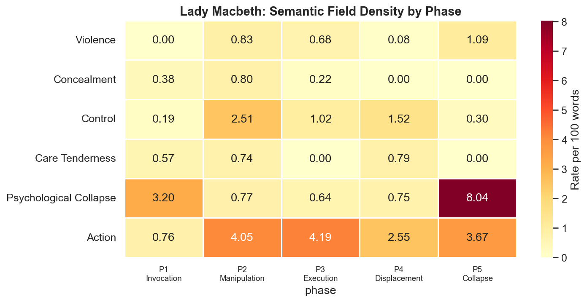
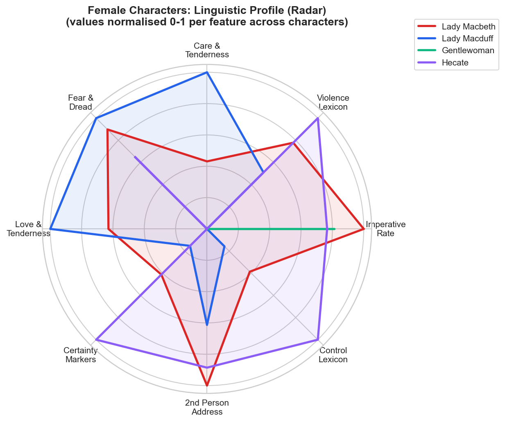
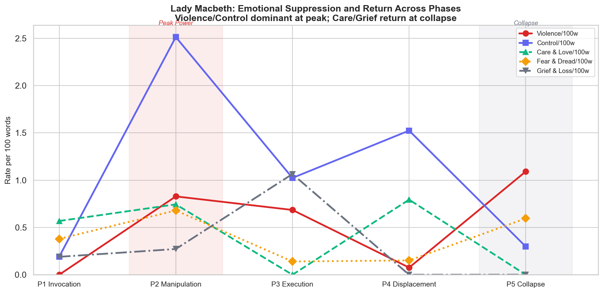

Unsex Me Here
Does Lady Macbeth really “speak like a man” — and does her grammar of command rise and fall with her power?
The claim, taken seriously
Critics have long said that Lady Macbeth “speaks like a man” — that she borrows a masculine register of command to seize a power the play denies her. It is a compelling line. It is also, as usually stated, untestable.
This project turns that literary intuition into an empirical question. If Lady Macbeth’s authority is really encoded in how she speaks, then the shifts in her power across the play should leave measurable fingerprints in her language — above all in her use of imperatives (direct commands) and other markers of interpersonal dominance.
The working hypothesis is deliberately simple: when Lady Macbeth is in control, her language should turn directive, agentive, and command-oriented; as her authority fractures, those features should weaken. To test it, her dialogue is divided into five dramatic phases that track her arc from summoning power to losing her mind — Invocation, Manipulation, Execution, Displacement, and Collapse.
The interesting result, as we’ll see, is that the simple hypothesis is wrong in a revealing way.
How the play was measured
The corpus is the full text of Macbeth (Project Gutenberg edition). Every line of dialogue was extracted and tagged by speaker, act, and scene, so that each of Lady Macbeth’s speeches could be located precisely in the play’s structure and assigned to one of the five phases through a rule-based mapping of act–scene boundaries.
In plain terms the play was turned into a tidy table — one row per speech, labelled with who says it and where — so the computer can compare Lady Macbeth’s language at the start of the play with her language at the end.
The central feature is the imperative: a clause that issues a command (“screw your courage to the sticking place”). These were found with a hybrid detector — part rule-based patterns, part syntactic heuristics over the parse tree, with manual validation of the results. Imperative use was recorded both as raw counts and, crucially, as a rate per 100 words, so that a long speech and a short one can be compared fairly.
In plain terms counting commands isn’t as easy as searching for an exclamation mark — English hides them in word order and sentence structure. So the method combines hand-written rules with the grammar the computer parses, then a human checks the catches. And because a long speech naturally contains more of everything, commands are measured as a density — how many per 100 words — not a raw tally.
Why a rate “per 100 words” instead of a raw count?
Raw counts confound two different things: how commanding someone is, and how much they happen to talk. Normalising to a rate isolates intensity from volume — a two-word order and a hundred-word oration can then be placed on the same scale.
Imperatives are only one signal. Each speech was also profiled across a battery of features associated with dominance, certainty, and cognitive state:
- Modal verbsObligation & intention (“must”, “shall”) vs possibility — assertiveness vs hedging.
- Lexical fieldsViolence, control, and care vocabularies, counted as rates.
- 2nd-person pronouns“You / thou” as a marker of outward, other-directed control.
- 1st-person singular“I / me” as a marker of inward, self-focused cognition.
- Question typeRhetorical challenges vs genuine inquiry, split by confrontational vocabulary.
- Clause & speech lengthProxies for rhetorical coherence and cognitive organisation.
Two more layers add nuance. Collocation analysis looks at the words that cluster around her imperative verbs — is she commanding violence, or commanding washing? And a keyword analysis using log-likelihood surfaces the vocabulary that is statistically distinctive of Lady Macbeth relative to comparison groups: Macbeth himself, the play’s other women, and the whole-play baseline.
In plain terms log-likelihood is a way of asking “which words is she unusually fond of, compared with everyone else?” — flagging vocabulary that is characteristic rather than merely frequent.
A word on honesty of scale. Lady Macbeth speaks relatively little — the corpus is small. So the analysis prioritises descriptive clarity over statistical machinery. Inferential tests (Fisher’s exact, Mann–Whitney U, permutation tests, Poisson regression) were run but treated as exploratory: signposts, not proofs. With this few speeches, the pattern in the numbers matters more than any single p-value.
Why not lean on p-values here?
Significance tests assume enough data to separate signal from noise. On a corpus of a few dozen speeches, they are unstable and easy to over-read. Reporting the shape of the evidence — and being explicit about its limits — is the more defensible stance for a single dramatic character.
Commands rise as control collapses
The simple hypothesis predicted that commands would peak with power and then fade. They do not. Measured as a rate per 100 words, Lady Macbeth’s imperative use climbs almost monotonically across the play — lowest when she first summons power, highest at the very moment her mind gives way. Select a phase below to read its profile.
The resolution is that frequency is the wrong lens — function is the right one. The same grammatical form does completely different work at different points in the arc.
In Invocation (Act I.v), her imperatives are aimed at supernatural entities — “come, you spirits.” These are performative speech acts that try to summon power, not commands that exercise it over another person. In Manipulation (I.v–vii), the commands turn outward onto Macbeth: targeted, strategic, woven into persuasion. This is the phase where directive language and real interpersonal power align most tightly — the true peak of her authority, even though it is not the peak of her command rate.
By Execution and Displacement (the murder and the banquet), the commands keep coming but change character: they become reactive — crisis management rather than strategy. Surface-level directive language persists even as her grip loosens. Then, in Collapse (V.i, the sleepwalking scene), imperative density is highest of all and yet emptiest: fragmented, repetitive, detached from any actionable context. This is not control but compulsion — the grammar of command running on with nothing left to command.
The body of the sentence breaks down
If Collapse were really a return to power, her speech should regain its early structure. It does the opposite. Speech length falls off a cliff — from a mean of 141.5 words per speech in Invocation to the low twenties by the murder — and average clause length nearly halves, from ~13.9 words in Manipulation to 6.4 in Collapse. The commands survive; the coherence that made them powerful does not.
The vocabulary tells the same story from another angle. Her distinctive words migrate from violence, control, and concealment in the early phases toward psychological and obsessive registers at the end — blood, washing, sleep. Agency turns inward and becomes affliction.

Set against the play’s other women, Lady Macbeth is a genuine outlier. Lady Macduff records no imperatives at all; her questions are sincere inquiries voicing vulnerability. Lady Macbeth’s questions, by contrast, are rhetorical challenges — instruments of dominance loaded with contempt. Her control vocabulary and certainty markers sit far above the female baseline, which is exactly what the “speaks like a man” reading predicts — though, as the arc shows, that register is something she performs and then loses, not something she simply has.


Directive language correlates with power — but it does not equal it. What separates command from control is function, context, and coherence.
Lady Macbeth’s trajectory runs from performative invocation, to strategic interpersonal control, to reactive management, and finally to compulsive, fragmented speech. Computational features capture each transition with real precision — and in doing so they don’t overturn the centuries of literary reading of this character; they sharpen it. The numbers show that a single grammatical form can encode both the seizure of power and its erosion, depending on where in the sentence — and the psyche — it lands. That is the case for reading a play with a parser as well as with a pen.